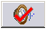

Acknowledging alarms
If there are any alarms associated with a control module and an alarm occurs during operation of the process, the module name will be displayed in the Alarm Banner at the bottom of the operator's screen. Alarms have a descending priority of Critical, Warning, or Advisory and a status of acknowledged or unacknowledged. Unacknowledged alarms are more important than acknowledged alarms. For alarms with equal priority and status, alarms with a more recent timestamp are more important than older alarms. Depending on the screen resolution, the five or six most important alarms are displayed on the Alarm Banner. Selecting the small button to the right of an alarm button displays additional information about the alarm in the line below the alarm buttons.
You can click an alarm button to go immediately to the primary control picture for the associated module.
To acknowledge alarms, do either of the following:
Click the large Alarm button in the lower right corner of the Alarm Banner to acknowledge alarms in the main picture.
Click the Alarm button at the bottom of the module faceplate to acknowledge all alarms for that module.

In addition to the alarms displayed on the process graphics, a standard alarm list shows all active alarms and their priorities. To see the alarm list, do either of the following: